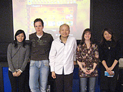
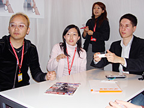
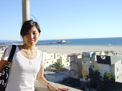

いろいろ大変そうですが、どんな苦労があるのでしょうか？
海外とのやり取りは時差があるのでそこで苦労することがありますね。
例えば、アメリカ、日本、イギリスと同時に話をすることがなかなか難しいので、時間との闘いになってきたりすると時差を計算しつつ、色々と進めていかなければなりません。
後は、文化の壁や言葉の壁をどう乗り越えて理解し合うか。そこが大変というか、やりがいだと思って仕事をしています。
この仕事をしていて良かったと思うときはどんなときですか？
どんなときが楽しいでしょうか？
色々とあるので挙げているときりがないかもしれませんが、仕事の一環とは言え、やはりゲームが形になっていく段階で見たりプレイしたりできるのは、この仕事の楽しいところだと思います。
私の場合は英語が好きなので英語を使って仕事をしている時にやりがいや楽しさを感じたりもしています。
後は、ゲームの開発に携わっている開発者の方々と一緒に仕事ができて、色々と教えてもらうときがあるのですが、それもまた楽しさでもあります。
たとえば、海外出張に同行したときに、開発者の方と一緒にいると、この人はどこからインスピレーションを得て、どんな角度から物事を見ているのかといったことが分かり、とても勉強になります。そうすると、海外の担当者にも心からその開発者の意思や意図を伝えられるような気もします。

ドイツ支社にてSOEとSOGのPRスタッフと
（後ろの大スクリーンを使ってメディアの方に
デモを行った後)私自身、もともと人と関わるのが好きなので、人との出会いが多いこの仕事はまさにうってつけなのかもしれませんね。
ゲームを作るのにはこんなに沢山の方々が関わっているのだと、この仕事をして初めて知ることができました。
英語がお好きということですが、何か資格のようなものを持っているのでしょうか？どの程度の英語ができると、このような職種につけるのでしょうか？
実は私は特に資格を持っていません。就職活動をするときに、TOEICを受験したくらいでしょうか。
親の仕事の関係で、2歳半から9歳半まではポルトガル、13歳から18歳（中学2年～高校3年）まではアメリカで暮らしていました。
大学入学のため日本に戻ったのですが、それまでのほとんどの期間を海外で生活することができ、好きだと言えるもの（英語）を1つでも持てたという点で、両親には本当に感謝しています。
学生時代は、どのようなことに力を入れていましたか？大学でも英文科などで英語を専攻していたのでしょうか？
アメリカ時代はボランティア活動に燃えた時期でもありましたね。
「家庭の事情などで教育が受けられない子供たちを、いかにのびのびと教育をさせるか」といった、国や地域を通じて人々を支えていこうという精神に感動しました。
「子供たちと一緒に何かをする」というボランティア活動に力を注いだり、「地域活性化のための毎年行われる大きなオークションのお手伝い」といったボランティア活動をさせていただいたりしていました。
日本の大学では特に英文科にいたわけではありません。学部でいうと、環境情報学部に入っていました。メディアという切り口から映像に興味を持ち、映像制作などに没頭していましたね。
3分くらいの短編ものから、ストーリーのある15分くらいのものまで、長さは色々でしたね。
課題の一貫で、インターネットラジオの番組を作ったこともありました。そこでは、音声だけで物事を伝える難しさと楽しさを学びました。
チームで何かを作り上げることの楽しさと難しさを日々感じながら、大学に泊まり込んでは編集室にこもったり、収録スタジオに1日中入り浸ったりして過ごしていました。
仲間と一緒に目指したものを形にしていく日々はとても楽しく、充実していましたね。
セガに入ったきっかけ、動機などを教えていただけますでしょうか？

TOY FAIRのNINTENDOブースにて
（ドイツ雑誌社の方にインタビューの一貫として
ゲームを実際に遊んで頂く）海外生活を通じて、日本という国を外から見た時にとても素晴らしい技術や力を持っている国であることを感じました。
ですが、それだけ色々な魅力を持っている国であるにもかかわらず、その技術力の高さや素晴らしさに対する外国の方の認知度は意外と低いのではないかと感じたのも事実です。
もっと日本の魅力を海外の人に知って欲しい。そう思ったのがきっかけでした。
TVゲームが常に我が家にあったことと、人を笑顔にする仕事をしたいという2つがゲーム業界を目指したいと思う動機につながりました。
セガは海外展開にも力を注いでいたので、ここでなら自分の好きな英語を使って仕事ができるのではないかと思い、セガの門を叩き、今に至ります。
セガに入って、どのようなことがやりたいと思っていたのでしょうか？
私自身は技術者にはとてもなれないので、今のようにサポート業務を通じて海外と現場をつなぐ仕事をしたいと思っていました。
入社するときは漠然としていましたが、今やっている仕事内容は正にそのときイメージした夢と同じだと思います。
それは素晴らしいですね！では、仕事以外の趣味も聞いていいですか？
基本的に体を動かすことは好きです。
後は、ドライブに行って美味しい空気を吸ったりして、きちんとリフレッシュする時間も大事にしたいなぁと思っています。つい先日は蛍観賞にもいってきました。自然が与えてくれる力や感動は本当に凄いなぁと思います。
まとまった休みがあるときには、海外に行きますね。自分の中で色々とリセットする意味でも。
英語にどっぷり浸かりたいというのもありますが、そういう機会でもないと英語をうまく取り戻せないかなと思っていまして。
できるだけ英語しか使わなくていいような環境に身を置きます。大体、行き先はアメリカです。
アメリカの、エネルギーが好きというか、活気に溢れているところが好きですね。

カリフォルニアのSanta Monica Pierをバックに みんな基本的にストレートで、すごくハッキリと
「良いものは良い」
「悪いものは悪い」
という。そういったところでの厳しさはあるのですが、なぜか行くと元気になれるんです。
気候もいいし、住んでいたので慣れているというのもあるのですが、カリフォルニアによく行きますね。